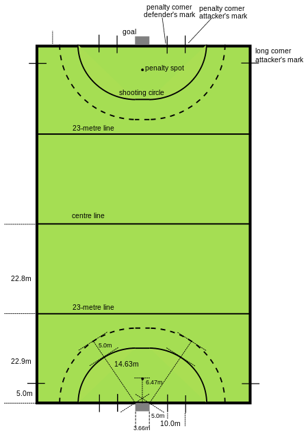

HOCKEY
Rules and Play

The game is played between two teams of whom eleven, 10 field players and one goal keeper, are permitted to be on the pitch at any one time. The remaining players may be substituted in any combination. There is an unlimited number of times a team can sub in and out. Substitutions are permitted at any point in the game, apart from between the award and end of a penalty corner; two exceptions to this rule is for injury or suspension of the defending goalkeeper, which is not allowed when playing with a field keep, or a player can exit the field, but you must wait until after the inserter touches the ball to put somebody back in.
Players are permitted to play the ball with the flat of the 'face side' and with the edges of the head and handle of the field hockey stick with the exception that, for reasons of safety, the ball may not be struck 'hard' with a forehand edge stroke, because of the difficulty of controlling the height and direction of the ball from that stroke.
The flat side is always on the "natural" side for a right-handed person swinging the stick at the ball from right to left. Left-handed sticks are rare, but available; however they are pointless as the rules forbid their use in a game. To make a strike at the ball with a left-to-right swing the player must present the flat of the 'face' of the stick to the ball by 'reversing' the stick head, i.e. by turning the handle through approximately 180° (while a reverse edge hit would turn the stick head through approximately 90° from the position of an upright forehand stroke with the 'face' of the stick head).
Game Play
For the purposes of the rules, all players on the team in possession of the ball are attackers, and those on the team without the ball are defenders, yet throughout the game being played you are always "defending" your goal and "attacking" the opposite goal.[30]
Sideline hit in a match Standard Athletic Club vs. British School of Paris (1996)
The match is officiated by two field umpires. Traditionally each umpire generally controls half of the field, divided roughly diagonally. These umpires are often assisted by a technical bench including a timekeeper and record keeper.
Prior to the start of the game, a coin is tossed and the winning captain can choose a starting end or whether to start with the ball. Since 2017 the game consists of four periods of 15 minutes with a 2-minute break after every period, and a 15-minute intermission at half time before changing ends. At the start of each period, as well as after goals are scored, play is started with a pass from the centre of the field. All players must start in their defensive half (apart from the player making the pass), but the ball may be played in any direction along the floor. Each team starts with the ball in one half, and the team that conceded the goal has possession for the restart. Teams trade sides at halftime.
Field players may only play the ball with the face of the stick. If the back side of the stick is used, it is a penalty and the other team will get the ball back. Tackling is permitted as long as the tackler does not make contact with the attacker or the other person's stick before playing the ball (contact after the tackle may also be penalized if the tackle was made from a position where contact was inevitable). Further, the player with the ball may not deliberately use his body to push a defender out of the way.